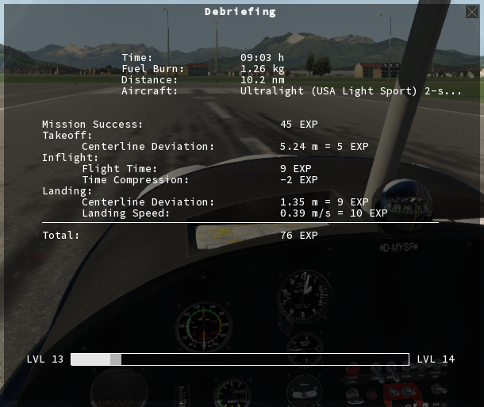

Once you complete your mission, you get a
detailed Debriefing. This includes an evaluation of
your take-off, your landing, the time you took to get to the
destination, and any difficulties, like IFR conditions, severe
wind, rain, bad runway conditions, and of course the mission
objectives.
You will also get a slight experience point reduction for using
the auto pilot or time compression, because flying by hand is
just more fun and challenging than having the computer do it.
But if you don't like this, that's ok, too, and you can either
level up your Time Compression and Autopilot skills, or disable
these features entirely in the preferences.
Of course, all your previews flights are saved in a logbook on
your computer.
